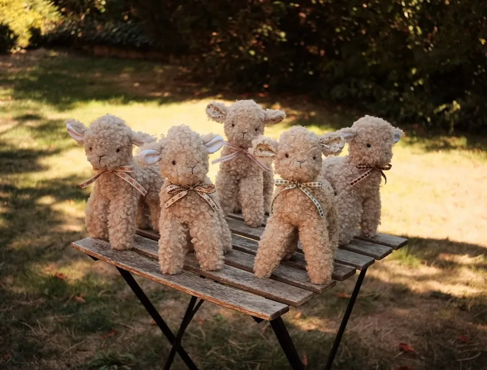

Megnézem
Megnézem Kézzel készült, szeretettel
A nyuszifül
farm lakói.
Bárányok, libák és apró részletek.
Ismerd meg a kézzel készült plüssöket
és a hozzájuk illő textíliákat.
Puha anyagok.
Személyes részletek.
Személyes részletek.

 Benedek
Benedek kézzel
készült
egy kis részlet a nyuszifül farmrólkészült
Kézzel készültMinták és textúrákA nyuszifül farm lakóiSzemélyes részletek
Ismerkedj meg velük
Néhány lakó a farmról



A nyuszifül farmA nyuszifül világa
Minden a
részletekkel kezdődik.
Egy virágos anyag. Egy hozzá illő masni. Egy fodros gallér. A farm lakói ezekből az apró részletekből kapják meg a saját karakterüket.
„Amikor a farm gondolata először átfutott az agyamon, eldöntöttem, hogy valami olyat szeretnék nektek alkotni ami már a kezdeti időszakban is veletek lehet!”További történetek az Instagramon
Képek a farmról
Találkozzunk Instagramon
Van egy elképzelésed?
Írj, és beszéljük meg a részleteket.